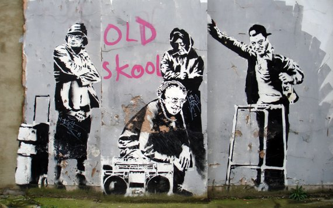

Credit
Old Skool has always been a firm favorite amongst fans of Banksy’s work. The piece was shown first in London’s Clerkenwell Road and showed old people engaging in the type of loitering usually expected from young people! There was some degree of mystery surrounding the piece in 2008 when it was painted over and replaced with a cut out stencil saying “collected".
2006-04
Spray Paint
London, UK